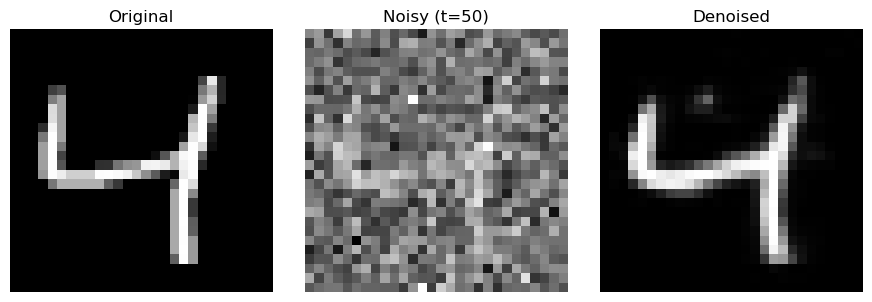
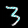

Minimal DDPM core
The code focuses on the denoising process instead of framework complexity, making the training loop and scheduler easier to follow.
Diffusion models, explained visually
This project is a minimal, educational diffusion demo built for students, researchers, and anyone who wants to understand how denoising diffusion probabilistic models work without digging through a giant training stack.

Original, noisy input at t=50, and the model reconstruction.
Why this project
The code focuses on the denoising process instead of framework complexity, making the training loop and scheduler easier to follow.
The included notebook walks through setup, model loading, and sample generation step by step with visual outputs.
You can use the pretrained model immediately or retrain from scratch on MNIST in just a few minutes on modern hardware.
Denoising progression
The pretrained U-Net recovers recognizable digits even after substantial corruption, which makes the notebook a nice playground for understanding the reverse diffusion process.

What you get
git clone https://github.com/tr-nukala/pytorch_diffusion.git
cd pytorch_diffusion
./setup.shsource venv/bin/activate
jupyter lab notebooks/Diffusion_Demo_Clean.ipynbProject links